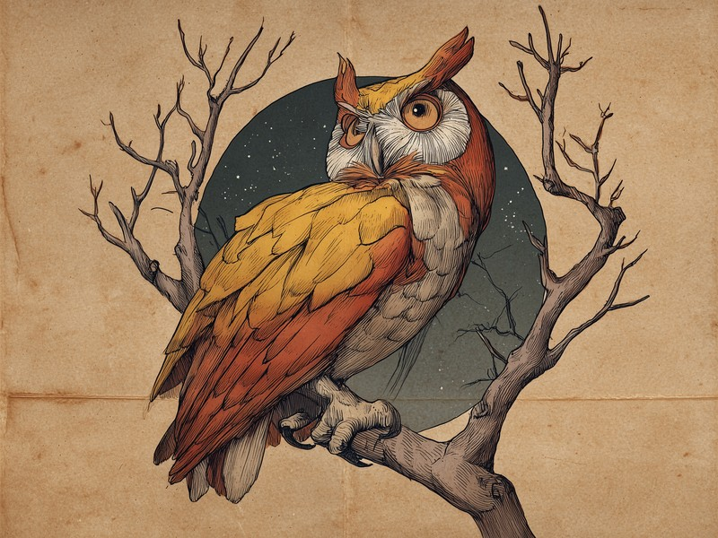

目玉がまったく動かせない、という弱点を首の可動域だけで押し切った力技の「ざんねん」設計。 Why can an owl turn its head 270 degrees? Its tube-shaped eyes are locked in place and can't move at all, so the neck has to do all the looking.
目玉が筒型で、眼窩に固定されたまま動かない
フクロウの目は、多くの動物のような球形ではなく、筒(円筒)のような形をしています。しかもその筒型の目玉は、頭蓋骨の眼窩にがっちりと固定されていて、左右や上下に動かすことがまったくできません。私たちが視線だけを横に流したり、ちらっと上を見たりするような動きが、フクロウには一切できないのです。ただし、この固定された筒型の目は、夜の狩りで獲物までの距離や奥行きを正確に測るのに役立っており、まったくの欠点というわけではありません。とはいえ「横を見たければ顔ごと向ける」しかないという不便さは、なかなかの「ざんねん」ポイントです。
目が動かないなら、首を270度回せばいい
動かない目を補うためにフクロウが取った方法は、首そのものを大きく回すことでした。その可動域は片側におよそ270度。ほぼ真後ろどころか、さらにその先まで顔を向けられる計算です。この極端な回転を支えているのが首の骨の数で、人間の頸椎が7個なのに対し、フクロウは14個と、ちょうど2倍もあります。目玉が動かないという弱点を、首の骨を倍にして力技で解決したわけで、「目を動かす」というごく普通の機能を丸ごと首に肩代わりさせている、なんとも「ざんねん」で逞しい設計です。
力技のカバーにも、さらに追加の工夫が必要だった
ところが、首を270度も回すこと自体が、本来なら体にとって大問題です。多くの動物がそこまで首をひねれば、血管が引き伸ばされて脳への血流が途絶え、脳卒中のような危険にさらされてしまいます。ジョンズ・ホプキンス大学の研究によると、フクロウは血液を一時的に溜めておける特別な血管の仕組みを持っており、極端に首を回している間も脳への血流が途切れないようになっているのだそうです。目が動かない弱点を首でカバーし、そのカバーにさらに専用の血管システムまで用意する。「ざんねん」の上に工夫を重ねた、フクロウの体の健気さが伝わってきます。
一方でフクロウには、ざんねんとは正反対の特技もあります。羽の外側の縁にあるギザギザ(セレーション)が翼の上の空気の流れを整えて乱流を抑え、羽の表面のビロードのような細かい毛が羽同士の擦れる音を消し、さらにふわふわの体と体重に対して大きな翼、ゆっくりした羽ばたきが合わさって、ほぼ無音で飛ぶことができるのです。このセレーションの仕組みは、日本の新幹線のパンタグラフ(集電装置)の騒音を減らす設計にも応用されています。